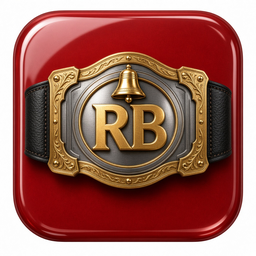

RingBoss privacy policy · Apps by Rocky Shaw

RingBoss: Bell to Bell
Support
RingBoss is a booking and storyboard workspace for wrestling promotions: roster, titles, events, match cards, bookings, venues, sponsors, story arcs, and a printable PDF event sheet. It starts blank, so you add your own promotion's logo, colors, roster, and events. RingBoss is the new name for Ark-Book Customer Edition. If you used Ark-Book Customer Edition, RingBoss opens your existing work as is.
Back up or move your work
Your data stays on your Mac. It is not uploaded or synced to another computer. To copy your work or move it to another Mac:
- Open RingBoss.
- In the sidebar, click Export backup.
- Choose where to save the backup. A zip backup includes your data plus media such as photos and logos. You can also save a JSON file that has the data only, without media.
- On the other Mac, install RingBoss, then click Import backup in the sidebar and choose that file.
- RingBoss will ask you to confirm before it replaces the current data with the backup. You can undo if you need to.
You can also click Open data folder in the sidebar to see the files on this Mac. On the direct download of RingBoss, the folder is Documents/Ark-Book Workspace. If you used Ark-Book Customer Edition, that is the same folder, so your work is still there. If you installed RingBoss from the Mac App Store, use Open data folder to see the exact location on that Mac.
Common questions
Does RingBoss have an account or a license key?
No. There is no sign in and no license key. If you buy it from the Mac App Store, Apple handles the purchase.
Does RingBoss sync between computers?
No. This edition does not sync. Use Export backup and Import backup to move your work.
I used Ark-Book Customer Edition. Will my shows still be there?
Yes. RingBoss opens that work as is. It keeps the Ark-Book Workspace folder name on purpose.
Where do I start?
Open Settings, then Branding, to add your logo and colors. Add wrestlers, managers, and teams on the Roster. Add titles, then create an event and build the match card. Use Bookings, Story Arc, and Sponsors as you need them. Export the event sheet as a PDF to print or share.
Privacy, in short
- No account, no license key, no ads, no analytics, and no tracking.
- No sync between computers.
- Your work stays on your Mac until you export a backup or delete it.
Read the full privacy policy.
Contact
Questions or a problem with the app? Email rockyshawjr@yahoo.com.